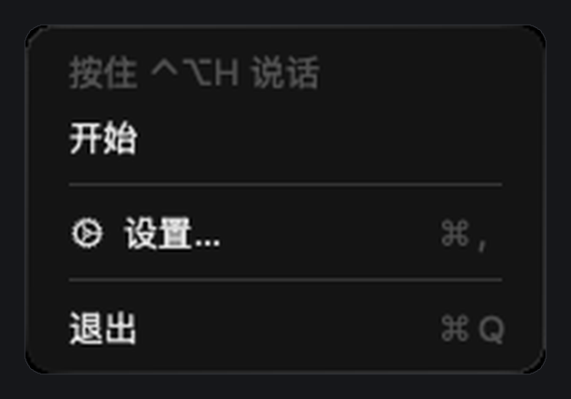
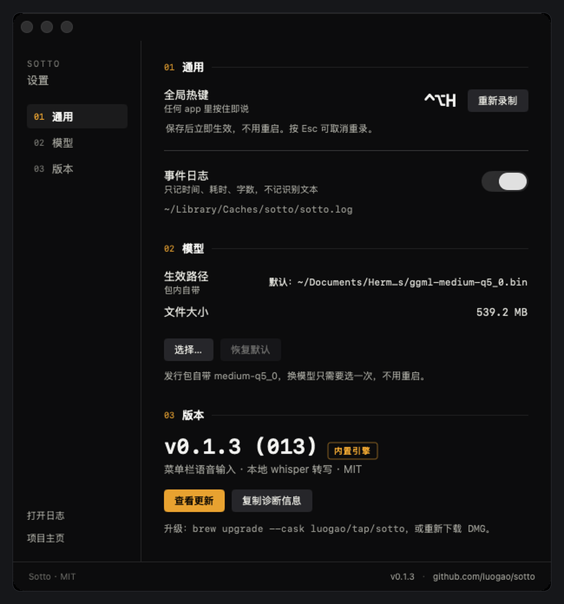

菜单栏常驻。按住 ⌃⌥H 说话，松手，文字直接落进光标处——哪个窗口在前，就贴在哪个窗口。转写在本机做，音频不出机器。
云端听写要联网、要账号、要等一段时间；系统自带的听写又绑死在输入框里。 Sotto 只想做一件事：任何地方按住就能说，松手文字就在那儿。
没有仪表盘首页，没有账号，没有引导流程。点开菜单就是全部。
全局热键 ⌃⌥H，任何 app 里都能用，不需要切窗口。
转写完直接写进光标位置，也留在剪贴板里，说错了随时重来。
whisper.cpp + medium-q5_0 模型，全程在本机跑，不联网。
热键走 Carbon，不申请「辅助功能」，不监听你的键盘。
人名、项目名、专业词写进 terms.txt，识别会跟着走。
每次转写记时长、字数、模型路径，不记你说了什么。


模型已经打进 app 里，装完就能说话，不需要再下载几百兆的文件。
装完菜单栏直接出现麦克风图标，首次使用允许麦克风即可。
brew install --cask luogao/tap/sotto
Swift Package，无需 Xcode 工程文件：
git clone https://github.com/luogao/sotto cd sotto && ./scripts/fetch-model.sh && ./scripts/bundle.sh
哪儿都不去。音频在本机转成 WAV 交给本地 whisper 进程，转写完录音就删。没有账号，没有遥测，代码是 MIT 开源的。
转写不需要。只有第一次从 GitHub 下载安装包需要网络，装完断网也能一直用。
暂时不行，只提供 Apple Silicon 构建。Intel 机器要自己从源码编，但没测过。
没买 Apple 开发者签名，app 是 ad-hoc 签名的。右键点图标 → 打开 → 再点「打开」即可，之后不再提示。用 Homebrew 装的话不会遇到这一步。
能。设置里点「重新录制」，按下新组合即生效，不用重启。
外接一个麦克风或用带麦的耳机。没有输入设备时 app 不会弹权限框，只会在日志里记一行 event=error stage=mic code=no_device。